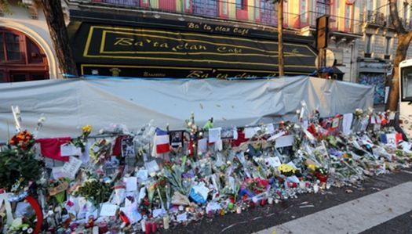
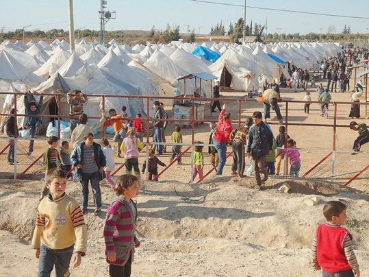
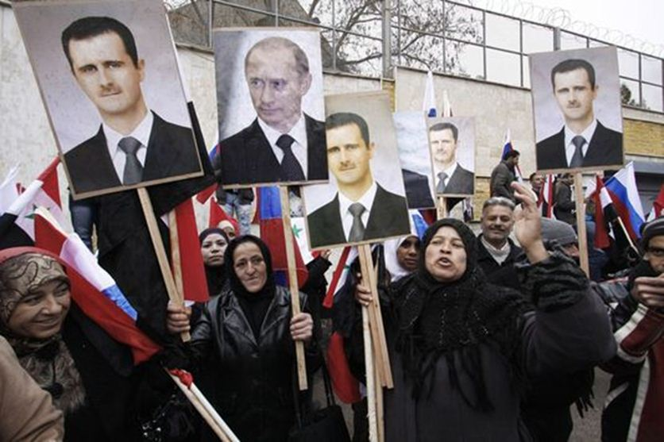

 Camp de réfugiés de Reyhanli près de la frontière turco-syrienneA en croire le petit monde des médias, le retour à Paris du groupe américain dont le concert avait été interrompu au Bataclan par l’attentat islamiste est un événement. Entourés d’un grand déploiement de forces policières, des spectateurs et des victimes de la meurtrière soirée seront scrutés. Des psychologues suivront de près les réactions émotionnelles. Il faut absolument dans notre société que tout tourne au spectacle et que tout sombre dans le dérisoire. Ce n’est pas le concert ensanglanté qui était l’essentiel, comme on semble le faire croire, c’était le pays touché en son cœur, en plein Paris, par une attaque d’une ampleur et d’une barbarie inégalées qui révélait un pays dont la défense était mal assurée malgré les rodomontades de ses dirigeants. La seule réponse qui s’imposait était un changement radical de politique en Syrie. Les services de renseignement de l’Etat syrien auraient pu nous fournir des informations utiles. Il fallait restaurer nos relations avec Damas et revoir au contraire nos rapports avec le faux-frère de l’OTAN, la Turquie qui, non contente d’avoir suscité la guerre civile chez son voisin, l’entretient par la fourniture d’armes et de soins aux rebelles tandis qu’un fructueux marché noir alimente leurs caisses grâce à une frontière poreuse pour ce genre de trafic. C’est aussi cette porosité qui a laissé passer à plusieurs reprises et dans les deux sens les terroristes qui ont opéré sur notre territoire. C’est encore la Turquie qui déverse sur l’Europe un flot de migrants. Parmi eux, il n’y a pas que des Syriens, et il y a sans doute des djihadistes.
L’Union Européenne va aider financièrement Ankara, mais pourquoi ? Erdogan a voulu la guerre et fait tout pour la prolonger. Le chantage éhonté de sa frontière fermée aux réfugiés ne fait que souligner son cynisme. Il a suscité et alimenté ce conflit. Si les victimes de son action se réfugient chez lui, c’est à lui de les prendre en charge.
Dieu merci, de nombreuses autres victimes ont trouvé refuge dans les zones sécurisées tenues par les loyalistes et leurs alliés.
Des soldats turcs à bord d’un blindé s'attaquent aux rebelles kurdes (26/08/2016)
Surtout la dramatique contradiction de la politique occidentale dont les Européens, et la France sont les complices éclate aujourd’hui au grand jour. Notre « allié » turc sans doute appuyé par notre autre « allié » saoudien, le régime au monde le plus éloigné des valeurs de nos démocraties, n’a mené qu’une guerre timorée à l’Etat islamique qu’il prétend combattre alors qu’il lui achète du pétrole. Dévoilant ses véritables intérêts, il pilonne maintenant les Kurdes syriens, nos alliés les plus efficaces contre Daesh. Au passage, il s’attaque aussi à l’Armée nationale syrienne après avoir abattu un avion russe, tout cela au mépris du droit international. L’incohérence occidentale a consisté à favoriser l’émergence de démocraties dans des pays qui n’y sont pas structurellement aptes. Elle a donc libéré les véritables forces qui étaient jusque-là contenues : la volonté de puissance des sunnites, animée par les Frères Musulmans et par les salafistes et financée par le wahhabisme pétrolier, les particularismes ethniques et le plus puissant d’entre eux, le désir d’indépendance des Kurdes frustré depuis la promesse non tenue du lendemain de la Grande Guerre. Les Saoudiens prennent conscience qu’à ce jeu, ils ont permis à leurs rivaux perses et chiites de marquer des points, de l’emporter en Syrie, en Irak et peut-être au Yémen. On comprend leur affolement. Les Turcs croyaient retrouver leur audience dans le monde arabe sunnite. Non seulement ils ont vu leur allié égyptien s’éloigner avec le retour des militaires au pouvoir, mais avec horreur leurs véritables ennemis, les Kurdes majoritaires dans le sud-est de l’Anatolie devenir les champions de la lutte contre l’Etat islamique. Contre ce monstre, les combattants au sol soutenus par les Occidentaux sont soit les Kurdes, soit les chiites irakiens : un cauchemar pour Erdogan ! Les Occidentaux ont poursuivi leurs incantations rituelles d’abord sur le départ de Bachar Al-Assad, comme si cet ophtalmologiste et dictateur d’occasion était à lui-seul le problème, ensuite, sur le soutien aux rebelles et aux islamistes modérés en concentrant leurs attaques homéopathiques contre l’Etat islamique. Le résultat de cette politique aveugle est consternant : les rebelles syriens constituent un bouillon de culture où l’on ne distingue plus qui est qui et à qui on remet les armes. L’Etat islamique et son rival Al Nosra y sont les forces les plus dangereuses.
La seule politique cohérente a été celle de Vladimir Poutine. La Russie, menacée à travers son dernier allié en Méditerranée, la Syrie, a consolidé le régime de Damas, c’est-à-dire l’Etat syrien qui contrôle la partie la plus utile du territoire et 70 % de la population. Si la Turquie ne déclenche pas une guerre dont les conséquences peuvent être terrifiantes, l’Armée syrienne et ses alliés en finiront avec les rebelles prétendument modérés.
La frontière turque sera contrôlée et l’Etat islamique isolé pourra enfin être écrasé par les armées irakienne et syrienne, avec l’appui des Kurdes auxquels il faudra bien faire des concessions. C’est l’intérêt de la Russie. C’est l’intérêt de l’Europe qui pourra assurer le retour des migrants syriens dans un pays à reconstruire. Ce n’est pas le souhait de M. Erdogan qui ne devrait pas être un problème.